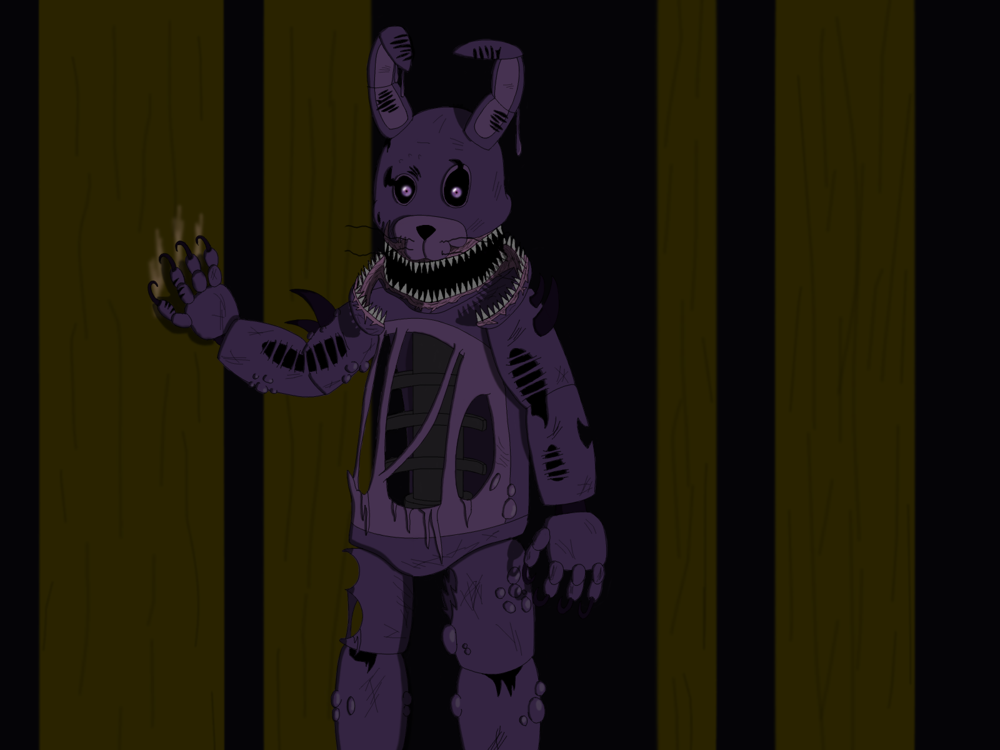
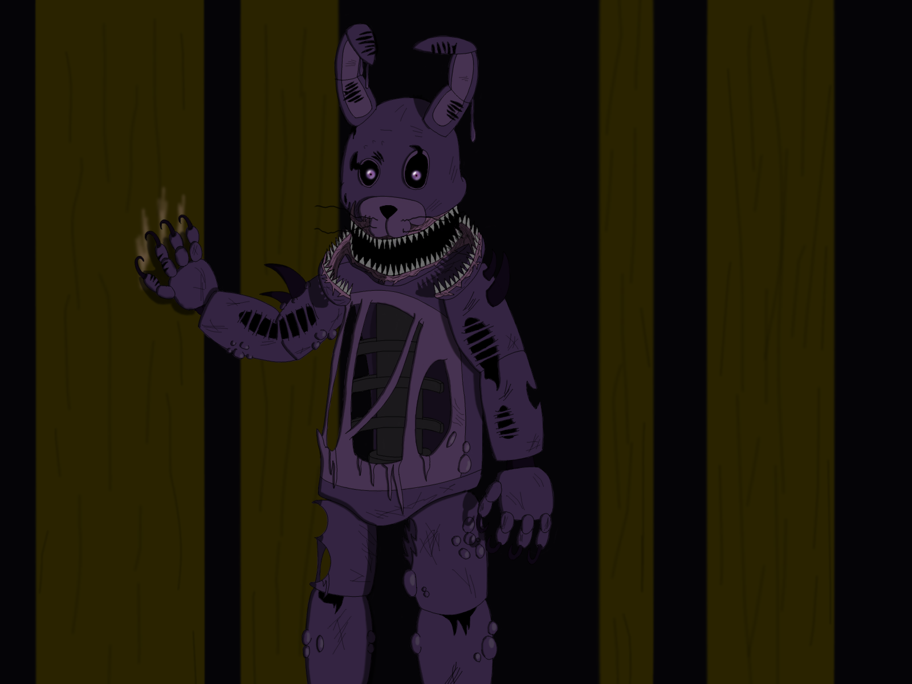

Vefsíða landsbankans er góð síða fyrir notendur þess. Fyrirtækið lætur vita um atburði og viðburði sem snerta þig. Vefsíðan er sett up þannig að það er þægilegt að vera á síðunni því litirnir eru þægilegir og það er auðvelt að finna það sem maður vill. Mynda notkunin er þægilega sett up þannig að myndirnar eru ekki fyrir manni. vefsíðan er mjög vel uppsett og ef maður er í vandræðum er alltaf hægt að hafa samband.
Vefsíða Tækniskólans miða við landsbankans er ekki eins góð. Litvalið er frekar óðægilegt og síðan er ekki það vel skipulögð að það er erfit að vita hvar hlutirnir eru sem maður er að leita að ef þú veist ekki hverning á að gera það. Textin er oft erfitt að sjá textan á síðunni því hann er oft í svipuðum lit. Sumar myndirnar eru ruglandi og fréttirnar eru ekki áberandi á botninum á síðunni. Þetta eru mismunandi áhorf á síðurnar.
 
